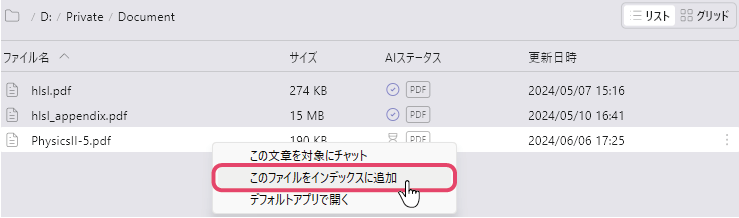
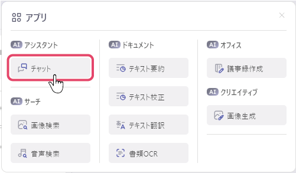
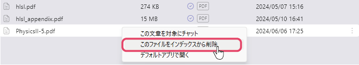
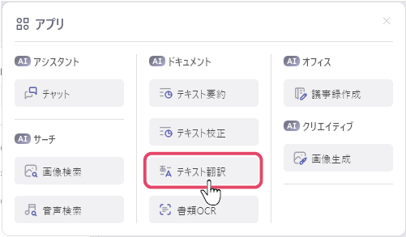
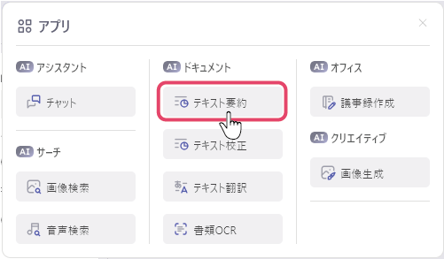
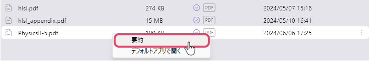
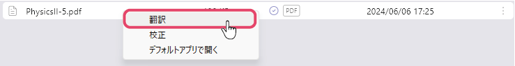

文章ファイルをインデックス登録して質問する
文書ファイルをインデックスに登録すると、登録した文書に記載された情報についてAIに質問することができます。
文書ファイルをインデックス登録する
- 登録したい文書ファイルを右クリックし、「このファイルをインデックスに追加」を選択します。選択したファイルのAIステータスアイコンが となれば、登録完了です。
 - フォルダを右クリックし、「このフォルダ内のファイルをインデックスに追加」を選択すると、フォルダ内の全てのファイルをインデックス登録することができます。
登録した文書ファイル内の情報について質問する
- 画面左上のアプリメニューから「チャット」を選択します。
 - インデックスから質問したい文書ファイルを右クリックし、「この文章を対象にチャット」を選択します。

- 質問を入力し、送信します。
- AIが関連するファイルを調べた回答が表示されます。
文書ファイルをインデックスから削除する
- インデックスから削除したい、登録済の文書ファイルを右クリックし、「このファイルをインデックスから削除」を選択します。
 - 選択したファイルのAIステータスアイコンが
 となれば、削除完了です。
となれば、削除完了です。
文章を翻訳する
日本語で書かれた文は英語へ、日本語以外の言語で書かれた文は日本語へ翻訳されます。
- 画面左上のアプリメニューから「テキスト翻訳」を選択します。
 - 翻訳したい文を入力し、送信します。
- AIが翻訳した結果が表示されます。
文書ファイルを要約する。
- 画面左上のアプリメニューから「テキスト要約」を選択します。

- 要約したいファイルを右クリックし、「要約」をクリックします。
 - AIが要約した結果が表示されます。
文書ファイルを翻訳する
- 画面左上のアプリメニューから「テキスト翻訳」を選択します。
- 翻訳したいファイルを右クリックし、「翻訳」をクリックします。 対応しているファイルフォーマットはpdf, txt, md, docx, xlsx,です。
 - AIが翻訳した結果が表示されます。翻訳結果の右下にある「保存」ボタンを押すと、翻訳結果をファイルとして保存することができます。